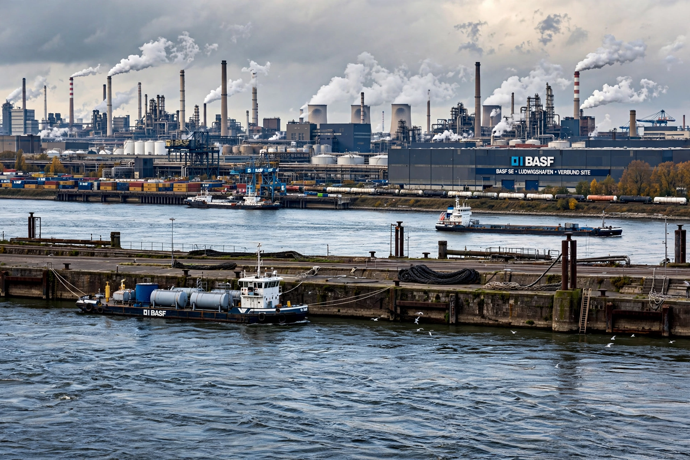

| Ludwigshafen am Rhein | |
|---|---|
 | |
| State | Rhineland-Palatinate, Germany |
| Population | about 172,000 (approx.) |
| River | Rhine (opposite Mannheim) |
| Founded | Town charter 1859; named for Ludwig I of Bavaria |
| Largest employer | BASF |
Ludwigshafen, officially Ludwigshafen am Rhein, is a city in the German state of Rhineland-Palatinate, on the Rhine opposite Mannheim. Together with Mannheim, Heidelberg and around 100 other municipalities, it forms the Rhine-Neckar Metropolitan Region. Ludwigshafen is a globally important centre of the chemical industry, dominated by the BASF complex, the world's largest integrated chemical production site; companies such as IG Farben had their roots in the region's dye industry.
The area included the fortress of Mannheim's bridgehead on the left bank of the Rhine, the Rheinschanze. In 1843 King Ludwig I of Bavaria approved a new settlement named Ludwigshafen ("Ludwig's harbour"), and it received town rights in 1859. Industry boomed after BASF (Badische Anilin- und Soda-Fabrik) moved its works across the river to Ludwigshafen in 1865, citing room to expand. The city grew rapidly with the chemical industry and drew migrant workers from across Europe.
Because of its chemical plants, Ludwigshafen was heavily bombed during the Second World War; the BASF works were among the key targets of the Allied oil and chemicals campaign. Post-war reconstruction left a largely modernist city centre. The city is also known as the birthplace of Chancellor Helmut Kohl (born 1930 in the Friesenheim district) and philosopher Ernst Bloch.
BASF's Ludwigshafen Verbund site covers about 10 square kilometres and employs tens of thousands. Cultural institutions include the Wilhelm-Hack-Museum, known for its Miró wall, the Theater im Pfalzbau, and the Staatsphilharmonie Rheinland-Pfalz. The city hosts the Festival of German Film each summer on the Parkinsel.